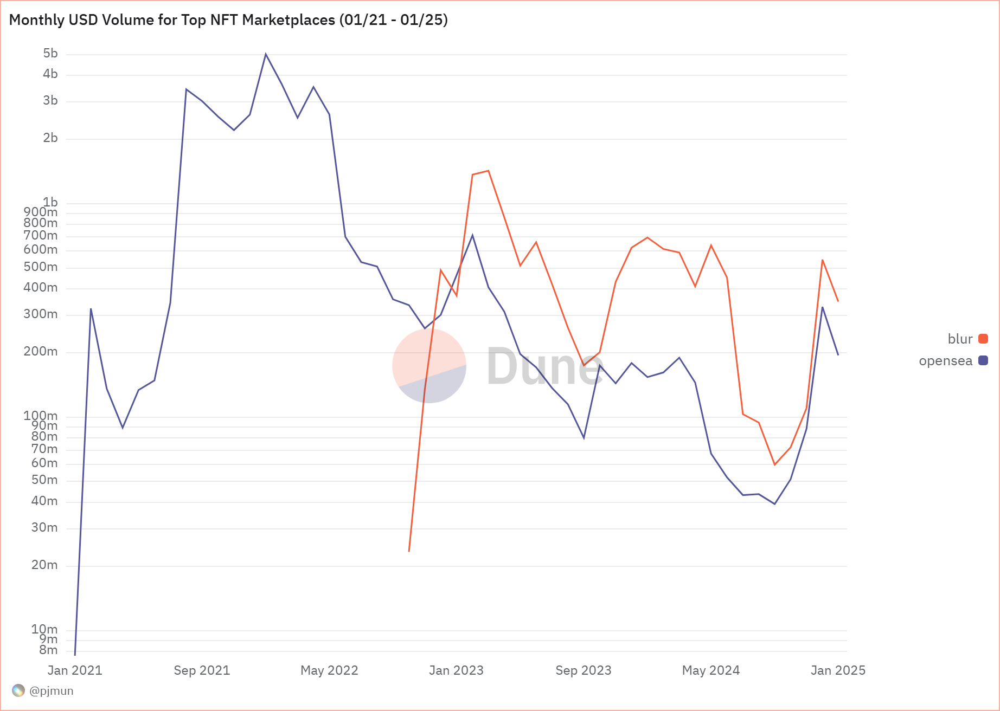
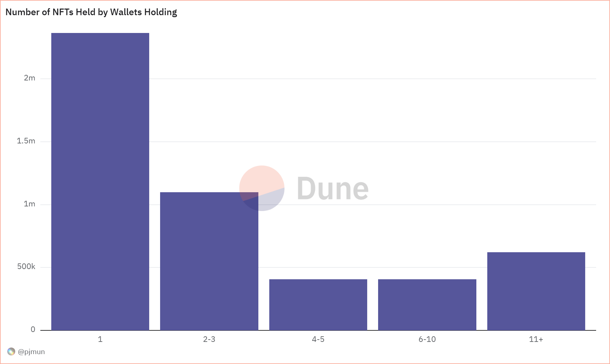
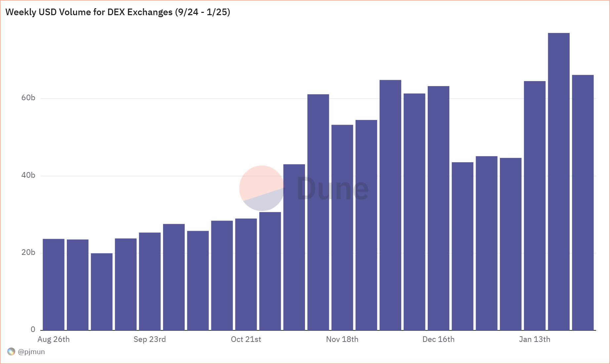
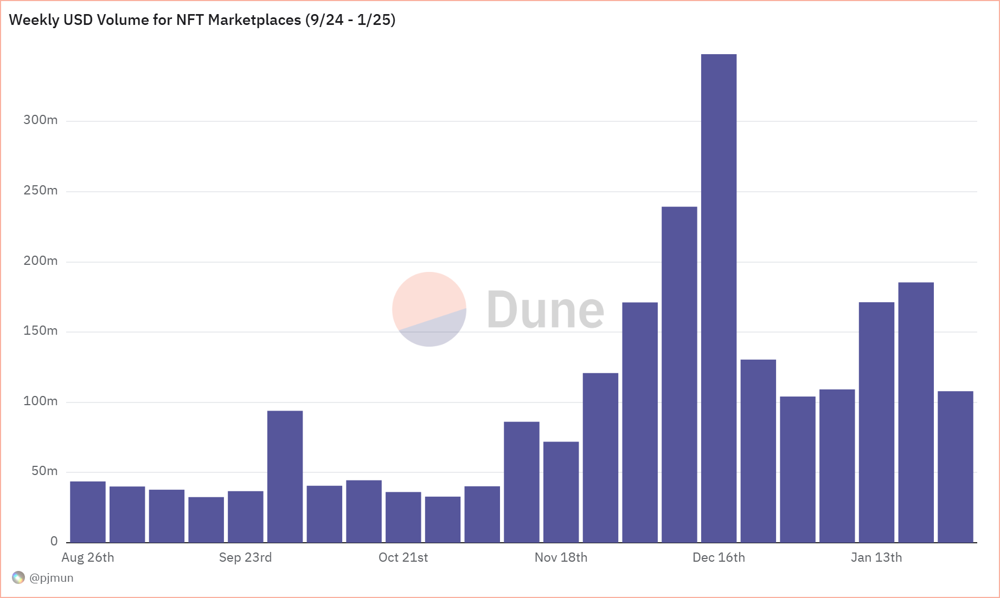
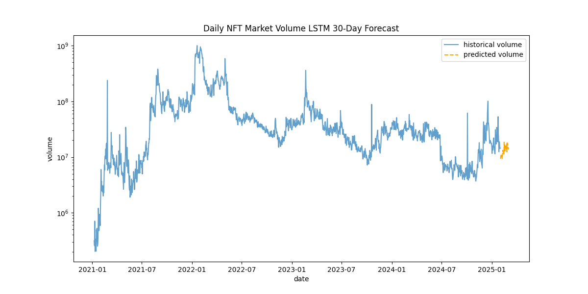
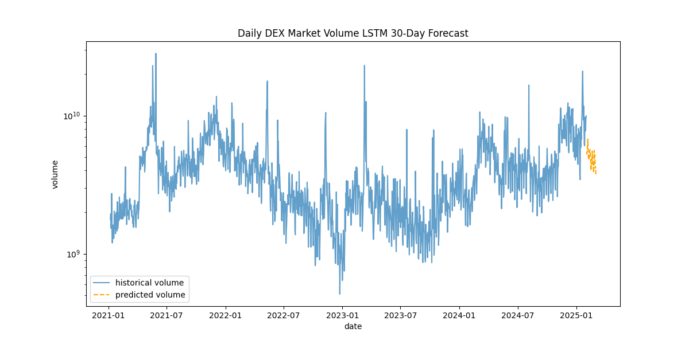

This study examines the health of the digital asset markets (non-fungible tokens and decentralized exchanges) as of the end of January 2025, conducts a comparative analysis between sectors, and forecasts NFT and DEX market volumes over the month of February 2025 to determine whether or not the weeks following the 2024 US election are indicative of a macro trend shift or simply a burst of hype that will revert to the mean.
Key Findings
The NFT market is continually bleeding in interest, with insufficient data to suggest a macro trend reversal quite yet.
All predictive models show a declining daily volume over the month of February 2025
Weekly USD volumes experienced a technical blow-off top in December 2024
Monthly USD volumes have been steadily declining since January 2022
Unique holder count has been steadily declining since January 2022
NFT volume as a proportion to DEX volume has been shrinking since January 2022
Nearly half of those who currently hold an NFT hold only one
The DEX market is at an interesting point, where institutional investors should be paying attention and staying cautious.
All predictive models show a declining daily volume over the month of February 2025
Weekly USD volumes have been steadily increasing since September 2024
Monthly USD volumes are hovering right below all time highs set in previous cycle
Analysis and Key Insights
MARKET HEALTH - To measure market health, I looked into various metrics for NFTs:
Monthly USD Volume for Top NFT Marketplaces
Unique Holder Count
Number of NFTs Held by Wallets Holding

Results:
Monthly NFT volume has been steadily declining since January 2022 and is marketplace-agnostic.
Unique holder count has been bleeding since January 2022.
Nearly half (48.3%) of those who hold an NFT hold only one.

Implications:
There's not enough data to suggest that we may be in a macro trend reversal quite yet.
SECTOR COMPARISONS - Historically, DEX volumes preceded NFT volumes, under the narrative that investors gained immense wealth quickly, then stored and/or flexed it in the form of NFTs. To get a better sense of the bigger picture, I compared:
Monthly USD volumes
Weekly USD volumes
Monthly USD volumes as a proportion

Results:
In 2021, DEX exchanges peaked in weekly volume 7 months before NFTs.
Since September 2024, weekly DEX volume has been increasing steadily, with a notable bump in volume following the 2024 US election result, while weekly NFT volume experienced a spike of interest and a technical blow-off top.
As a proportion to DEX volume, NFT volume doesn't exceed over 1% until times of sector relevancy and mania. It stands at 0.2% in January 2025.

Implications:
Pay close attention to weekly DEX volumes. If they continue to trend upward, then monthly DEX volumes will break all-time highs in the coming months.
If monthly DEX volumes break all-time highs, then the NFT market may follow suit with a multi-month lag, as it has done historically.
30-DAY FORECAST - To measure where the markets are headed, I built a model to forecast NFT and DEX market volumes over the month of February 2025. To gauge the best model for a 30-day forecast, I took a multi-model approach:
Long Short-Term Memory (LSTM)
Extreme Gradient Boosting (XGBoost)
Hybrid Approach (LSTM + XGBoost)

Results:
For NFTs, all models show a clear decline in daily volume over the month of February 2025.
For DEX markets, all models show a clear decline in daily volume over the month of February 2025.

Implications:
The DEX markets are in a very precarious position in terms of volume. Recent weeks have shown increased interest, though all models forecast a downward trend in daily volume over the month of February 2025.
There's insufficient data to suggest that the recent spike in volume in NFTs is indicative of a larger move taking place.
Final Takeaways
For NFT and DEX markets, all forecast models show a decline in daily volume over the month of February 2025.
Since September 2024, weekly DEX volume has been increasing steadily, with a notable bump in volume following the 2024 US election result.
Last cycle, in 2021-2022, DEX exchanges peaked in weekly volume 7 months before NFTs.
As a proportion to monthly DEX volume, monthly NFT volume doesn't exceed over 1% unless in times of sector relevancy and mania. It stands at 0.2% in January 2025.